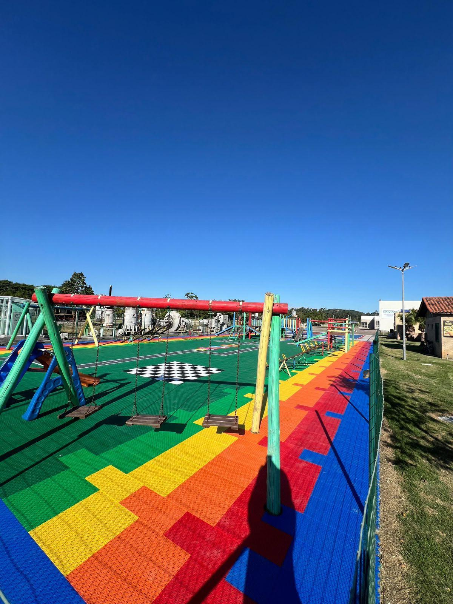
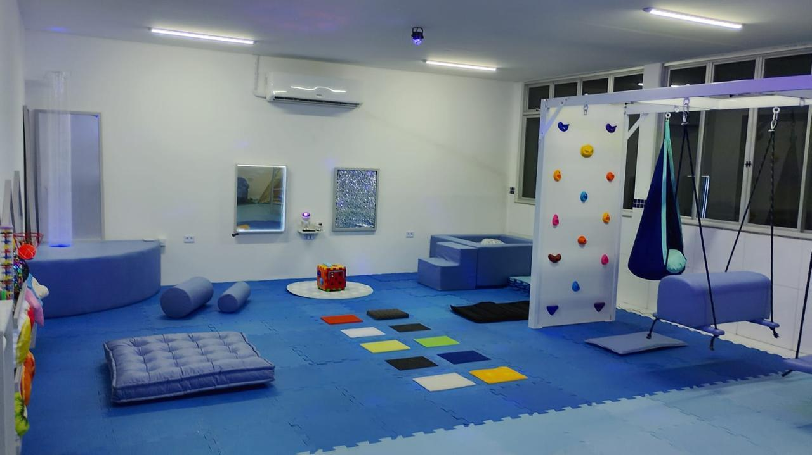
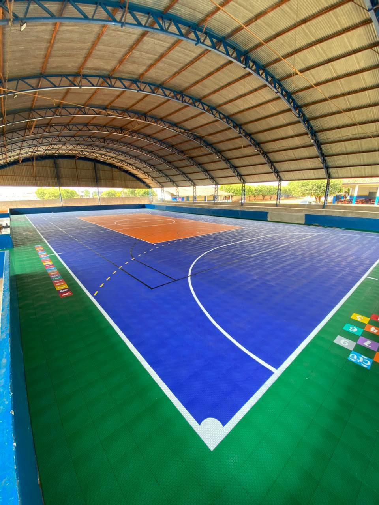
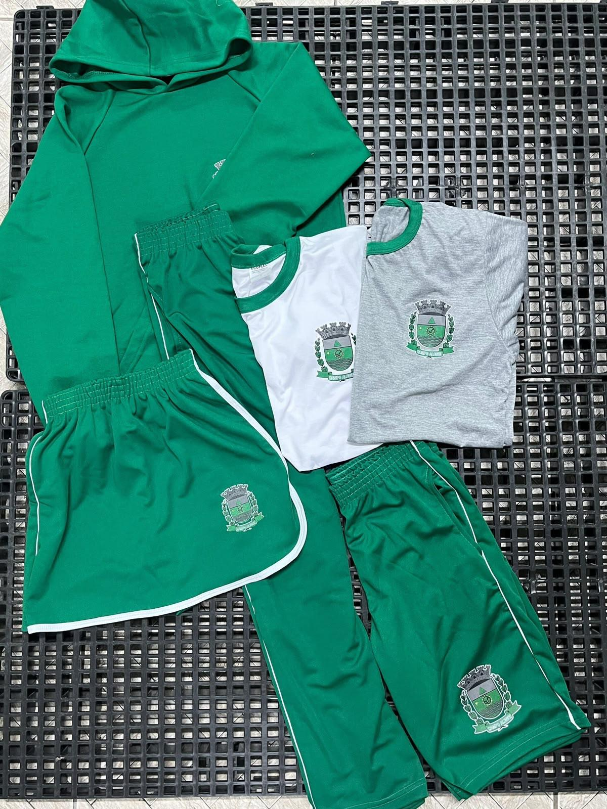
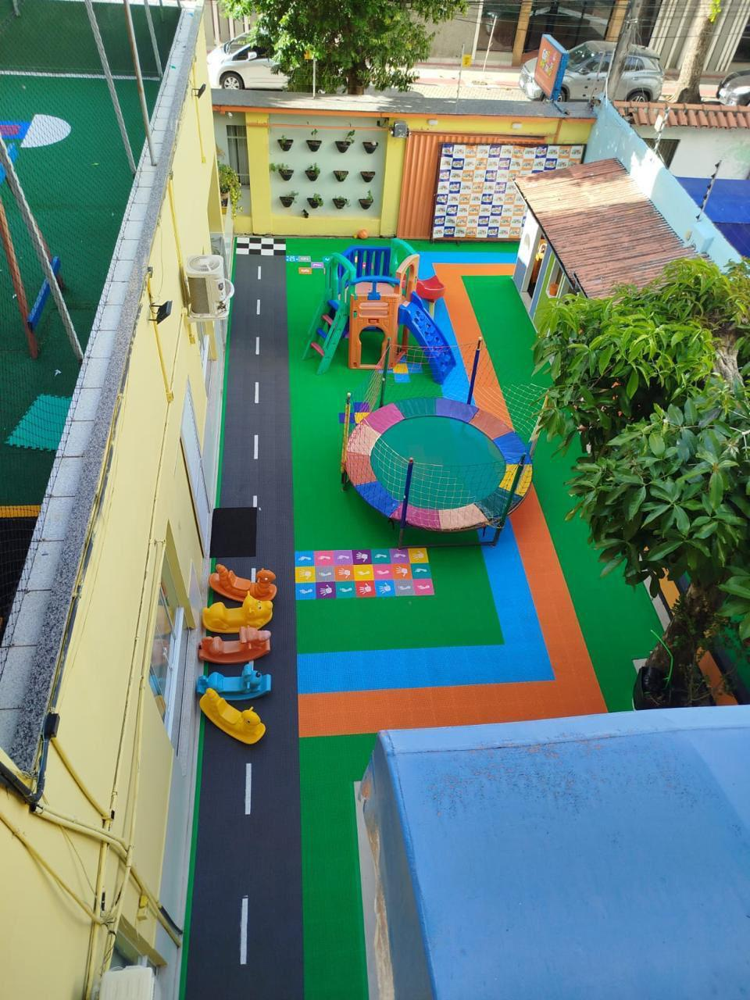

Segurança jurídica primeiro
Número da ata, objeto e vigência abertos desde o primeiro contato, para o jurídico conferir antes de qualquer conversa comercial.

O Portal Atto reúne, em atas de registro de preços homologadas, tudo o que uma prefeitura precisa para equipar escolas, unidades de saúde e a guarda municipal. O gestor adere à ata; nós entregamos, montamos e treinamos a equipe.
Boa ideia vira entrega quando existe ata na mão, prazo em contrato e um responsável com nome.
A adesão a ata resolve o processo. O que resolve o projeto é o que vem depois dela.
Número da ata, objeto e vigência abertos desde o primeiro contato, para o jurídico conferir antes de qualquer conversa comercial.
O gestor vê a sala, o pátio ou o refeitório projetado antes de empenhar. Nada de comprar item por catálogo e descobrir que não cabe.
Instalação feita pela nossa equipe, escola por escola, com prazo acordado e responsável definido para cada entrega.
Material entregue e ninguém treinado é material encostado. Professores e equipe recebem formação junto com a entrega.
Prefeitos, secretários de educação e gestores públicos usam as mesmas atas para resolver frentes diferentes — sem abrir um processo licitatório para cada uma.




Sem abrir novo processo licitatório e sem custo para montar o projeto.